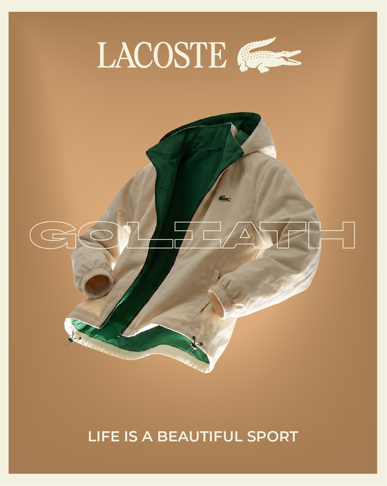
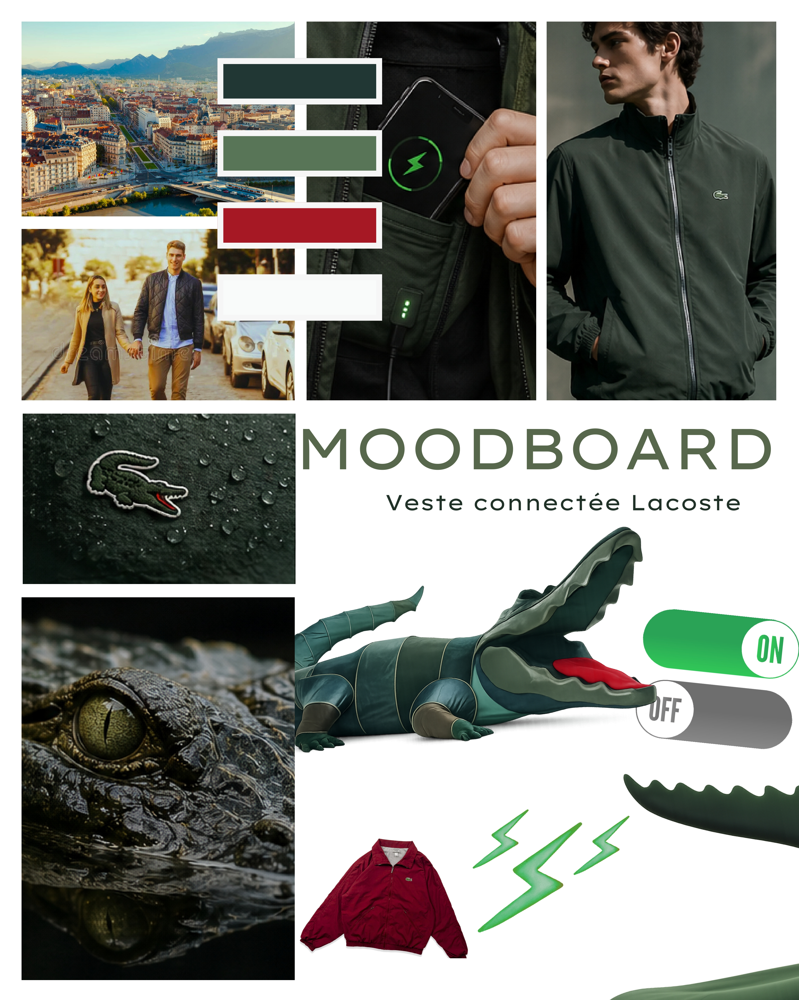
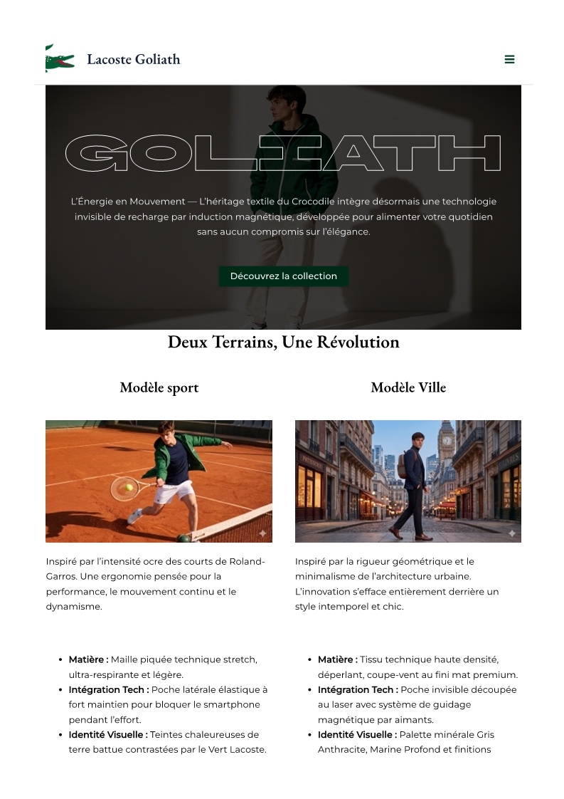

Lacoste
Goliath.
Campagne fictive pour le lancement d'une veste connectée : affiches print, spot vidéo et site WordPress.
- Format
- Campagne 360°
- Supports
- Vidéo, web, print
- Outils
- Premiere, After Effects, WordPress
- Budget web
- 20 000 €
Choix de la direction artistique
Le choix du moodboard s'inscrit dans la continuité de la campagne « Play With Icons » en reflétant l'alliance subtile entre l'héritage sportif et intemporel de Lacoste et une vision moderne et décontractée du luxe. À travers des ambassadeurs aux univers variés (sport, cinéma, musique) et des mises en scène soignées aux teintes épurées, le moodboard visuel met en valeur les pièces iconiques tout en renforçant le positionnement premium et novateur de la marque auprès des jeunes générations.

Création des supports print
Le procédé de création des prints de la campagne s'articule autour d'une collaboration avec l'agence BETC et de la mise en scène de personnalités influentes issues du sport, du cinéma et de la musique. Chaque visuel propose une scénographie unique et personnalisée pour chaque ambassadeur tout en conservant une identité visuelle unifiée, renforcée par l'intégration d'éléments récurrents et identitaires tels que l'univers du tennis, le polo emblématique, le logo du crocodile et le nom « LACOSTE ». L'ensemble est ensuite décliné sous forme de photographies publicitaires de haute qualité destinées aux supports d'affichage traditionnel et à la presse.
Tournage et montage
Captation vidéo sur 3 jours. Le montage a été réalisé sous Adobe Premiere Pro avec l'intégration d'effets visuels créés spécifiquement sur After Effects pour rythmer la vidéo.
Ouvrir sur YouTube ↗Site web WordPress
Le développement web de la campagne, réalisé sur WordPress, s'articule autour de la création d'un site vitrine et d'une plateforme e-commerce dédiés. Ce canal numérique, budgétisé à 20 000 €, complète la stratégie de communication globale en offrant un point de contact direct pour présenter l'innovation de la veste connectée, relayer l'univers de la marque et faciliter l'expérience d'achat en ligne des consommateurs.
